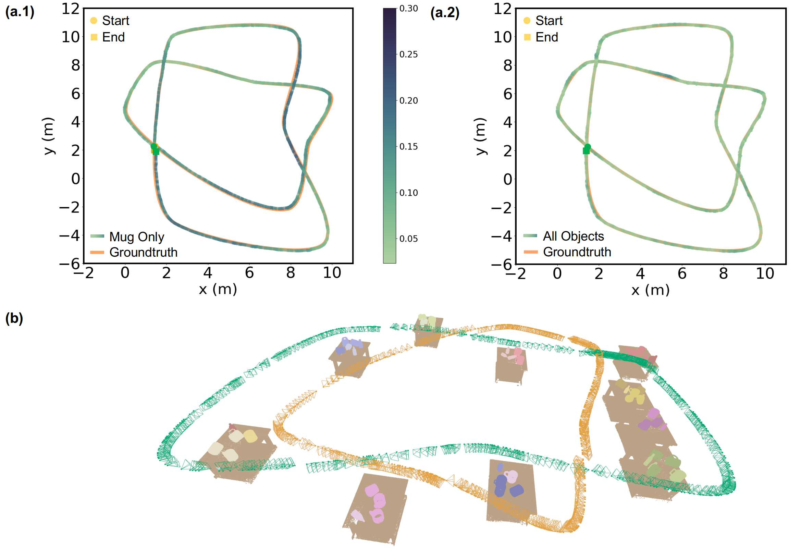

We thank all reviewers for their comments. This webpage provides additional experiment results as part of authors' reponse to reviewers.
I. Localization and Mapping Results with Non-planar Object Layout
A. Data Overview
The above video shows the scene and trajectory data for examining the proposed NeuSE-based object SLAM strategy with non-planar, randomly-oriented object setup. With the goal of proving its principled effectiveness and considering the unavailability of robust off-the-shelf semantic segmentors for non-upright mugs and bottles and with the mechanism work itself with, we carry out the experiment in simulation. On top of our old experiment setting in Section V.A featuring various viewing angles, occlusion patterns, and object changes, we further randomly turn over roughly 50% of the bottles and mugs (25 out of the 52 objects) in the previous synthetic sequence adopted in the paper, thus creating a "hilly" object layout shown in the video. Note that to obtain a variety of mug orientations, we assume that sticky-tape-typed procedures are used to keep lyding-down mugs from rolling due to gravity.
B. Results

Following the same setting of using only mugs or all objects, we demonstrate the effectiveness of the
proposed SLAM strategy in the face of randomly oriented objects both
quantitatively and qualitatively.
(a) As shown in the last column of the table, in terms of the all the metrics here, the proposed
strategy
turn out to perform better on the new randomly-oriented object sequence. This can be attributed to (1) our
training strategy (III.D) where we generate training samples viewed from all over the object of interest
with various occlusion partterns from surrounding auxillary objects.
(2) The lying-down mugs turn out to help reduce the ambiguity in the existence as their handles are more
visible (hence distinguishible) when pointing in a upward than the usual sideway direction. (3) ??? SE(3)
equivariance by construction.
(b) Visualization trajectory estimates with color variation indicating the ATE values. The
evenly lighter color of the trajecotry estimated with all objects further prove our design for leveraging
ambiguous objects.
(c) Full
scene reconstruction of all objects against the better "All Objects" trajecotry estimate, showing NeuSE's
reconstruction capability against objects with various orientation and the spatial consistency of the
reconstruction and camera trajectory estimate.
II. Comparison with EM-Fusion on Real-world Sequences
A. Baseline: EM-Fusion: Dynamic Object-Level SLAM With Probabilistic Data Association
We further choose to evaluate the self-collected real-world sequences on EM-Fusion[1], an object-level SLAM
approach that
adopts local Signed Distance Function (SDF) object volumes to track moving objects while performing camera
localization.
EM-Fusion is selected as a relatively new and open-sourced object SLAM approach and could be directly
evaluated without further training. Few open-sourced object SLAM approaches are available and each
method may look at a specific type of scene along with relevant objects (e.g., DSP-SLAM[2] with outdoor
scenes and cars or CubeSLAM [3] and QuadricSLAM [4] with indoor scenes but static environment). Though
focusing on highly dynamic motions in front the camera instead of long-term scene inconsistency, the
intention of dealing with certain types of environment dynamics while leveraging object-level information
make us find EM-Fusion a quite good baseline to compare with.
B. Results on Real-world Sequences

(a.1)-(a.2) Visualization of EM-Fusion trajectory estimates on the 4-Round and Triple-Infinity loop.
(b) Quantitative comparison in term of Absolute Trajectory Error (ATE) against results of all other
variants
presented by our paper. Together with the trajectory visualization in (a), we can see that EM-Fusion
performs poorly on our real-world testing sequences, leading to bumpy trajectory estimates with significant
drift around table corners with sharper turning motion.
During actual testing, This may be attributed
to: (1) the compromise between tracking accuracy and memory consumption, and (2) the accumulated drift when
less object overlap is available. In order to maintain a finer
SDF background volumes (voxel size of 1 cm for a 5m^3 space) for better
tracking accuracy, the machine can easily run out of memory due to SDF volume instantiation. This then
limits EM-Fusion effective continuous operating
area to be roughly the size of a table top.
To enable EM-Fusion finishes the whole sequence, where our
robot
drives through 5 tabletops, we slightly tune the SDF volume resolution and divide the whole sequence into
several overlapping finer pieces and then align and concatenate the estimate to obtain the final estimate.
(c) Visualization of the estimation drift against the ground truth . With faster turning motion hence less
observation overlap on the object pixels to be projected for camera pose estimation, the less background
pixels
(compared to objects) then induce accumulated errors in the estimated trajectory, where bumpy drifty camera
locations are observed as shown in (c) here. Compared to EM-Fusion, NeuSE represents objects in as a
compact point cloud surrogate (usually in the order of hundreds) and encodes full object shape across viewing
angles. This then makes us approach less vulnerable to observation overlap for data association and are lightweight enough to function within a larger environment.
References
[1] Strecke, Michael, and Jorg Stuckler. "Em-fusion: Dynamic object-level slam with probabilistic data
association." Proceedings of the IEEE/CVF International Conference on Computer Vision. 2019.
[2] Wang, Jingwen, Martin Rünz, and Lourdes Agapito. "DSP-SLAM: object oriented SLAM with deep shape
priors." 2021 International Conference on 3D Vision (3DV). IEEE, 2021.
[3] Yang, Shichao, and Sebastian Scherer. "Cubeslam: Monocular 3-d object slam." IEEE Transactions on
Robotics 35.4 (2019): 925-938.
[4] Hosseinzadeh, Mehdi, et al. "Real-time monocular object-model aware sparse SLAM." 2019 International
conference on robotics and automation (ICRA). IEEE, 2019.